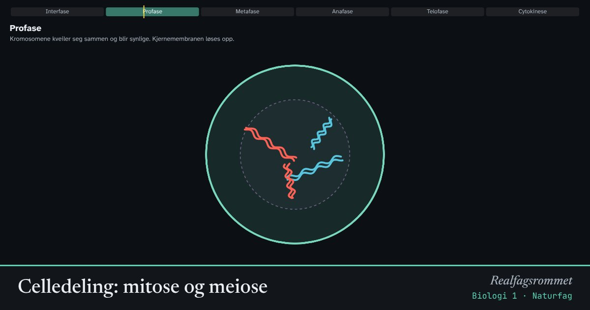

Celledeling: mitose og meiose
Ved mitose deler en celle seg i to helt like celler. Det skjer når kroppen vokser og reparerer seg. Ved meiose blir det fire kjønnsceller med halvparten så mange kromosomer, og alle er forskjellige.
Start animasjonen
Formler
Om animasjonen
Cellen her har to kromosompar, så 2n = 4. Røde kromosomer kommer fra mor og blå fra far. Det lange og det korte kromosomet er hvert sitt par av homologe kromosomer.
I mitose trekkes de to søsterkromatidene i hvert kromosom fra hverandre. Begge dattercellene får derfor nøyaktig samme sett med kromosomer som morcellen.
I meiose skjer det to delinger. Først skilles de homologe parene, deretter søsterkromatidene. Resultatet er fire celler med ett kromosom fra hvert par.
To ting gir variasjon: Det er tilfeldig hvilken vei hvert par snur i metafase I (uavhengig fordeling), og ved overkrysning bytter homologe kromosomer biter. Mennesket har 23 par, så uavhengig fordeling alene gir over 8 millioner kombinasjoner.
Prøv dette
- Hvor mange kromosomer har hver dattercelle etter mitose og etter meiose her?
- Trykk «Ny tilfeldig fordeling» flere ganger. Hvor mange ulike kombinasjoner av røde og blå kromosomer kan en kjønnscelle få når 2n = 4?
- Regn ut 2²³. Hva forteller tallet om mennesker?
- Hvorfor er det viktig at celledeling reguleres? Hva kan skje hvis den ikke blir det?
Kompetansemål
- Naturfag: DNA, arv og evolusjon
- Biologi 1: Celledeling: mitose og meiose